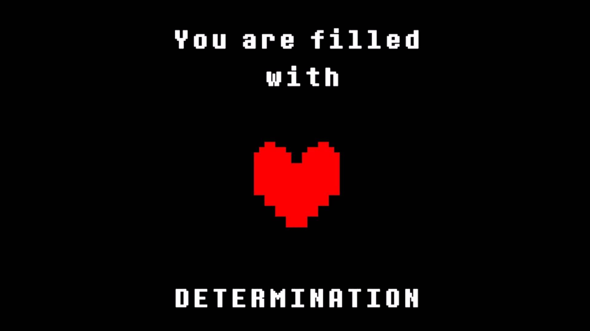

DETERMINAÇÃO
Determinação é uma habilidade que permite que Almas (Geralmente humanas) persistam após a morte. O ser com a maior quantia de determinação é capaz de salvar e resetar.A principal habilidade de um ser determinado é persistir após a morte. Tendo uma quantia suficiente de Determinação, usuários que possuem esta habilidade podem ter acesso a alguns feitos
SAVE
É a habilidade de criar uma ramificação na linha temporal original, salvando o seu local no tempo e espaço da nova ramificação, repetir o processo por mais de uma vez criará novas ramificações, aqueles que possuem Determinação podem repetir tal processo quantas vezes quiserem, desde que ninguém sobrepuje sua Determinação. O uso de tal técnica permite o uso da habilidade "Load".
LOAD
Permite o retorno daqueles que possuem Determinação ao seu último ponto salvo, podendo voltar mesmo após a morte por acessar remotamente seu ponto salvo, localizado em uma ramificação temporal. Permite também ao usuário escolher novas opções em diálogos, bem como tomar decisões diferentes das originais, criando assim, de forma indireta, novas ramificações na linha temporal.
RESET
Permite que o usuário apague a linha temporal arrastando a todos da linha temporal anterior para uma nova linha temporal criada remotamente. Entretanto usar tal habilidade fará com que o usuário volte à sua forma base. Seres que possuem Determinação ou que possuem um conhecimento prévio de tal habilidade não terão suas memórias afetadas, enquanto outros apenas terão breves relances de memória.
TRUE RESET
Uma versão aprimorada do Reset padrão. Permite ao usuário apagar todo o progresso, bem como as memórias de todos. Pode ser apenas ser criado por seres com uma quantidade imensa de Determinação. Ao utilizá-lo, todos serão removidos da ramificação antiga, sendo movidos para uma nova linha temporal criada remotamente pela habilidade. Não apenas o usuário retorna à sua forma base, bem como todos aqueles arrastados junto dele..
' '